Typografisch onderzoek naar...
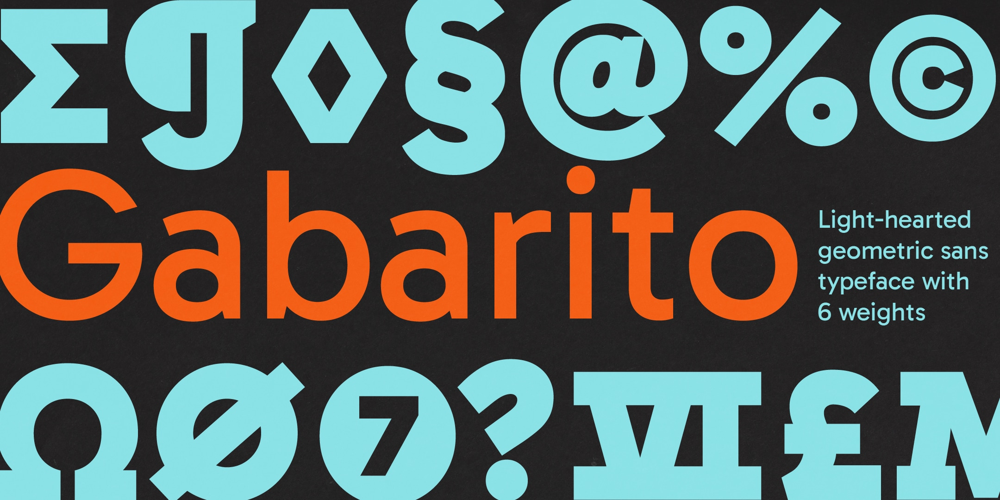Een uitgebreid lettertype met een vriendelijke uitstraling. Mijn oog viel op het lettertype tijdens een wandeling in de buurt van de HvA. Gebruikt in een poster met daarin de boodschap om niet te roken op de trappen. Een vriendelijke verzoek! Na een globale inlezing heeft het doel van het lettertype mij overtuigd om er dieper in te duiken.
Over Gabarito
Gabarito is een geometrisch schreefloos lettertype met 6 gewichten, variërend van Regulier tot Zwart,
oorspronkelijk ontworpen voor een online leerplatform in Brazilië.
Het is vernoemd naar het Braziliaanse Portugese woord voor "een antwoordvel" en is gemaakt om jongeren te
helpen leren en voor het toelatingsexamens voor de universiteit, bekend als
"Vestibular", te doorstaan. De ontwerpers
en het online leerplatform deden dit door veel symbolen en figuren (van de middelbare school) in een zeer
vriendelijke stijl te verwerken,
die zowel functioneel als boeiend was.
Naast de Google Fonts Latin Core Character-set, die ondersteuning biedt voor verschillende Latijnse
alfabet-talen, bevat Gabarito ook andere zaken zoals wetenschappelijke subscripttekens, uitgebreide
wiskundige symbolen, Romeinse cijfers en alles wat een middelbare scholier nodig zou kunnen hebben voor zijn
huiswerk.
Het oorspronkelijke ontwerp werd in 2017 in opdracht gegeven, begon met Leandro Assis en Álvaro Franca, werd
vervolgens in 2020 verder ontwikkeld en verbeterd door Álvaro Franca en Felipe Casaprima, en kreeg
uiteindelijk in 2023 een kleine make-over voor zijn debuut in het publieke domein, waarbij dit laatste deel
veel hulp kreeg van Henrique Beier van Harbor Type.
Letterkaart
Basis Latijns
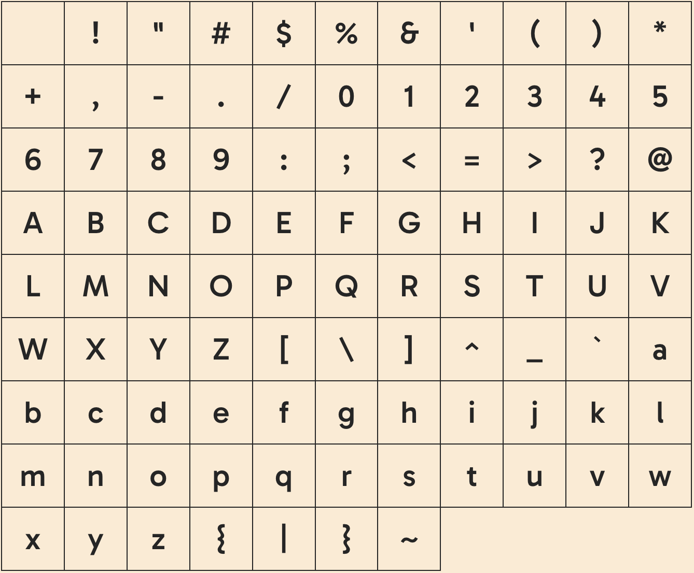Latijns Aanvulling
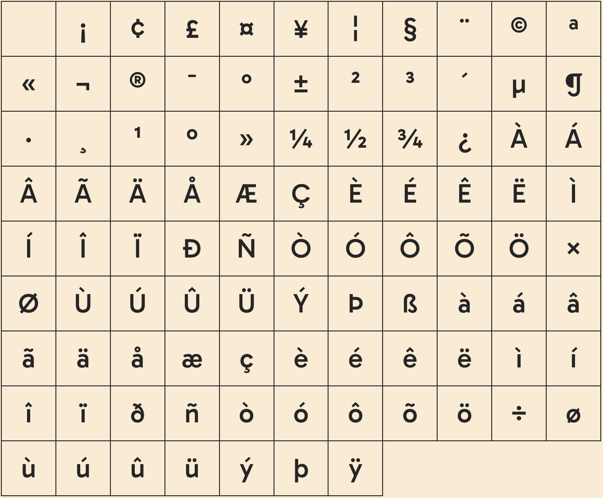Latijns Uitgebreid A
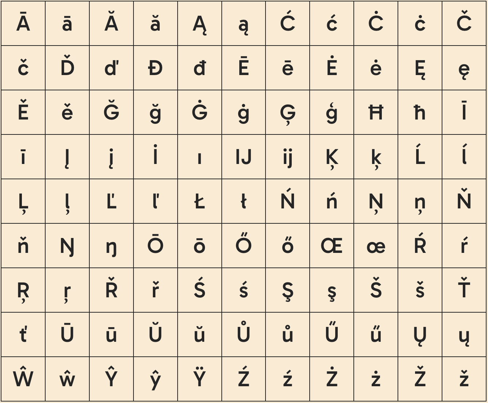Latijns Uitgebreid B
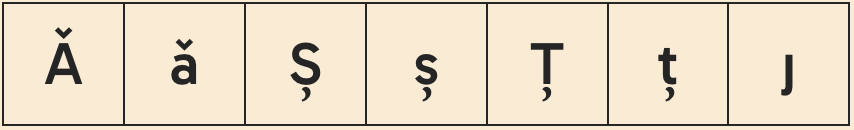Klemtoon Tekens
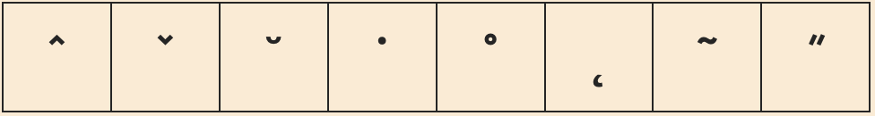Diakritische Tekens
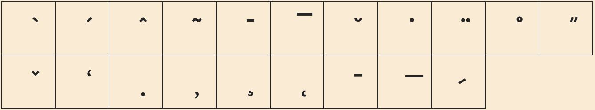Grieks en Koptisch
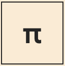Latijns Uitgebreid Extra
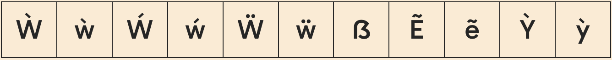Algemene Interpunctie
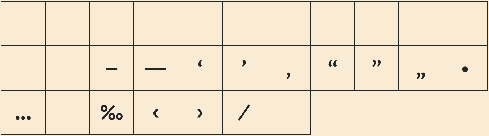Boven- en onderschriften
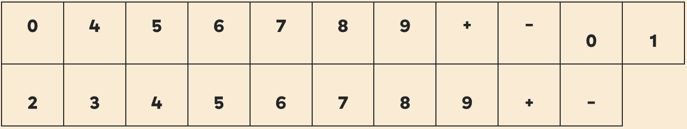Valuta Symbolen
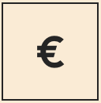Letterachtige Symbolen
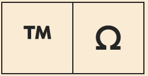Romeinse Cijfers
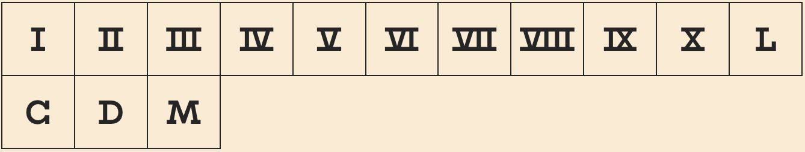Pijlen
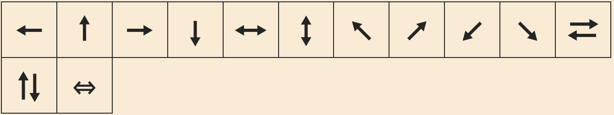Wiskundige Operatoren
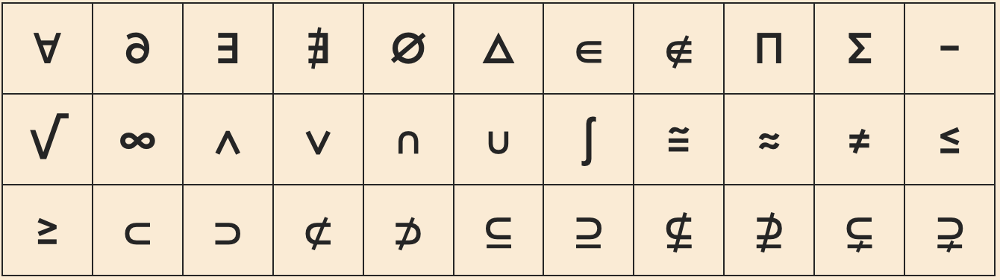Breuken
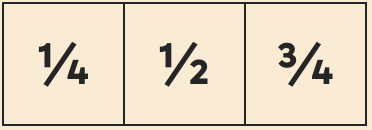Gabarito in actie!
Omdat Gabarito ontworpen is voor een online leerplatvorm is er gedacht aan elke mogelijke lay-out die je kan tegenkomen tijdens een examen. Daarom is het lettertype uitgebreider dan vele. Je kunt je voorstellen dat tijdens een toelatingsexamen van de universiteit er meerdere talen of wiskundige tekens voorbij komen. Hier moet het lettertype op afgestemd zijn. Onderstaand vind je voorbeelden van eventuele lay-out die aanbod komen en letters die mij persoonlijk zijn opgevallen.
Letters in de Spotlight
Zoals eerder beschreven is het lettertype geschikt voor talen over de hele wereld. Kijk bijvoorbeeld naar de Spaanse Ñ, de Duitse Ringel-S en Deense æ.

De geschiedenis van Gabarito
Gabarito is een voorbeeld van een sans-serif lettertype. Sans-serif lettertypes zijn ontstaan in de 19e eeuw als een alternatief voor serif lettertypes, die tot dat moment de norm waren. Sans-serif lettertypen werden pas echt populair en wijdverspreid gebruikt in de 20e eeuw. De term "sans-serif" betekent zonder schreef, verwijzend naar de kleine lijnen of krullen aan het einde van de slagen in lettertypen. Sans-serif lettertypen hebben een strak en modern uiterlijk door het ontbreken van deze versieringen.
 Het verschil tussen Serif en Sans-serif.
Het verschil tussen Serif en Sans-serif.
Een van de vroege sans-serif lettertypen wordt vaak toegeschreven aan William Caslon IV , die een sans-serif lettertype introduceerde in het begin van de 19e eeuw. Het was echter pas in het begin van de 20e eeuw dat sans-serif lettertypen breder werden geaccepteerd en meer werden gebruikt in ontwerpen.
 Voorbeeld van het eerst Sans-serif lettertype, genaamd Two Lines English Egyptian.
Voorbeeld van het eerst Sans-serif lettertype, genaamd Two Lines English Egyptian.
De Duitse lettergieterij Berthold introduceerde het
Akzidenz-Grotesk lettertype in 1896, dat wordt beschouwd
als een van de eerste veelgebruikte sans-serif lettertypen. In het begin van de 20e eeuw hebben ontwerpers
zoals Edward Johnston en Eric Gill in het Verenigd Koninkrijk, en de Bauhaus-beweging in Duitsland,
bijgedragen aan de popularisering van sans-serif lettertypen.
Een van de meest iconische en invloedrijke sans-serif lettertypen,
Helvetica, werd
in 1957 gecreëerd door de
Zwitserse letterontwerper
Max Miedinger en
Eduard
Hoffmann.
Helvetica speelde een belangrijke rol in de
brede acceptatie van sans-serif lettertypen in modern ontwerp en blijft tot op de dag van vandaag populair.
 Voorbeeld van logo's met Helvetica.
Voorbeeld van logo's met Helvetica.
Over de ontwerpers van Gabarito
Leandro Assis
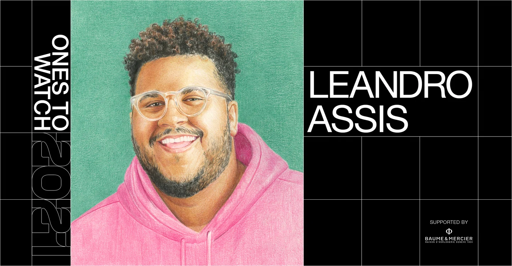Leandro Assis, een Braziliaanse letterkunstenaar en art director gevestigd in Rio, ook bekend als @lebassis.
Bekend om zijn zeer gedurfde letterontwerpen, kleurrijke paletten en speelse illustraties, trekt hij de
aandacht van wereldwijde merken en bureaus voor digitale projecten en marketingcampagnes voor diverse
scènes.
Hij inspireert design als een instrument om te praten over zaken die hem aan het hart gaan, zoals zwarte
cultuur, genderonderwerpen en LGBTQ+ rechten.
Ik heb mijn best gedaan om in het plaatje te passen van wat van een ontwerper wordt verwacht. Maar met de meeste dingen kan ik me niet identificeren. En ik kon mezelf pas proffesioneel vinden toen ik die last van me afschudde.
Leandro Assis
Assis' Stijlboek
Álvaro Franca
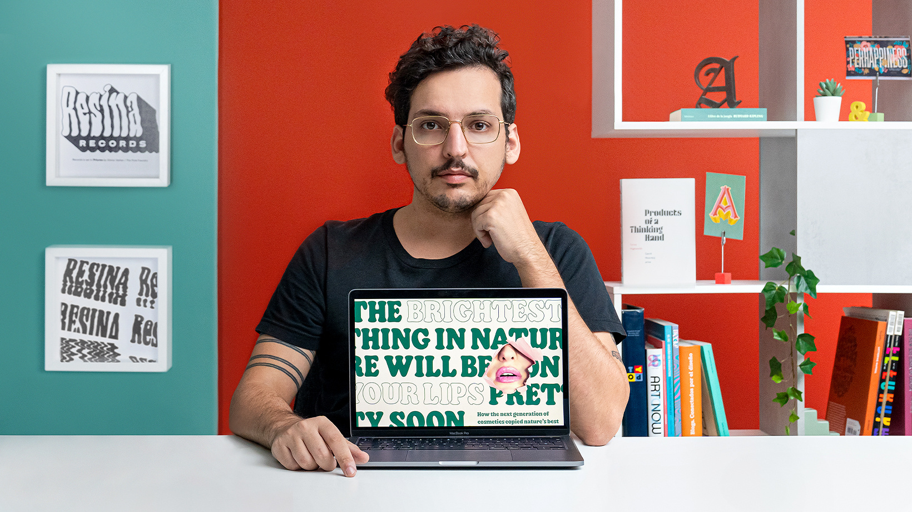Álvaro Franca, een letterontwerper uit Brazilië, gevestigd in Barcelona, met meer dan 10 jaar ervaring in het
ontwerpen van lettertypen en merken.
Sinds 2018 is hij zijn eigen type-ontwerppraktijk gestart, genaamd Naipe Foundry, waar hij bekroonde
lettertypen heeft uitgebracht en aangepaste lettertypen heeft gemaakt voor internationale klanten.
Ik hou van letters en ben gespecialiseerd in ervoor zorgen dat ze er geweldig uitzien terwijl ze de boodschappen van mijn klanten overbrengen.
Álvaro Franca